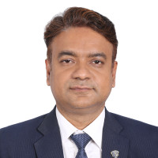

Institute of Information Technology
IIT Lab Complex, Ground Floor
Jahangirnagar University, Bangladesh
Email:mskaiser@juniv.edu;
Cell: +880-1511 000 555
Dr. M Shamim Kaiser is currently working as a Professor at the Institute of Information Technology of Jahangirnagar University, Savar, Dhaka-1342, Bangladesh. He received his Bachelor's and Master's degrees in Applied Physics Electronics and Communication Engineering from the University of Dhaka, Bangladesh in 2002 and 2004 respectively, and the Ph. D. degree in Telecommunication Engineering from the Asian Institute of Technology (AIT) Pathumthani, Thailand, in 2010. He worked as a postdoc fellow in the Big data and Cyber Security Lab of Anglia Ruskin University, UK from 2017-2018. He also worked as a Special Research Student at the Wireless Signal Processing and Networking Lab (Adachi Lab) of Tohoku University, Japan in 2008. His current research interests include Data Analytics, Machine Learning, Wireless Network & Signal Processing, Cognitive Radio networks, Big IoT data, Healthcare, Neuroinformatics, and Cyber Security. He has authored more than 299 papers in different peer-reviewed journals and conferences. He is an Academic Editor of Plos One Journal; Associate Editor of the IEEE Access and Cognitive Computation Journal, and Guest Editor of Brain Informatics Journal, IJACI (IGI Global), Electronics MDPI, Frontiers in Neuroinformatics, and Cognitive Computation Journal. Dr Kaiser is a Life Member of the Bangladesh Electronic Society; Bangladesh Physical Society and NOAMI. He is also a senior member of IEEE, USA, and IEICE, Japan, and an active volunteer of the IEEE Bangladesh Section. He is the founding Chapter Chair of the IEEE Bangladesh Section Computer Society Chapter.
This website provides information about my academic activities, publications, students, research collaborations, and keynote lectures.
Kaiser's research involves Applied Data Science, Computational Neuroscience, Big Data Analysis, Cyber Security, Machine Learning, Cloud Computing, High-Speed Multi-hop Communication, and Smart Healthcare.
My research supports several United Nations Sustainable Development Goals including:
Published Journal Articles / Conference Papers / Book Chapters / Books: 299+
Recognized as the Best Computer Scientist of Bangladesh according to Research.com.
Also listed in Stanford University's World's Top 2% Scientists in 2021 and 2022.
Team Lead, AII Research Group.